- Attendance: 4 Spencers
- Activity: Potluck
- Attendance: 7 Spencers
- Activity: Trip to Swig
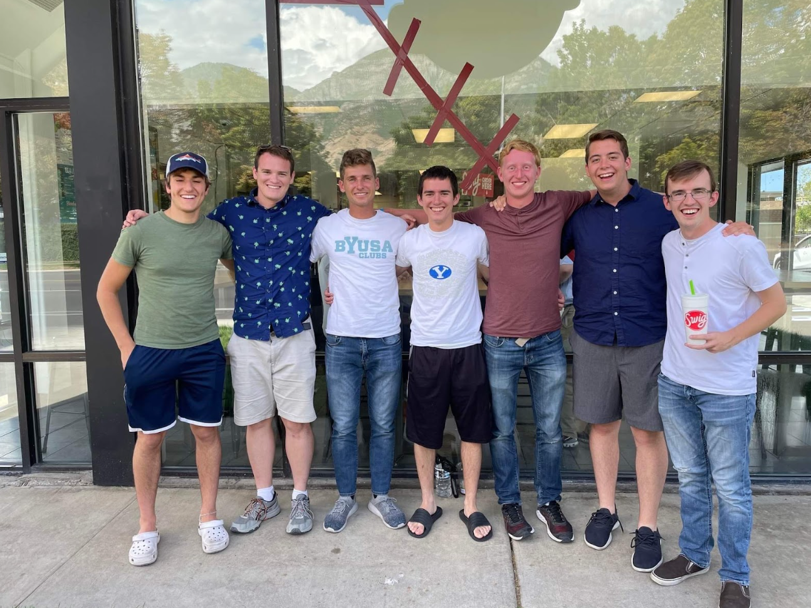
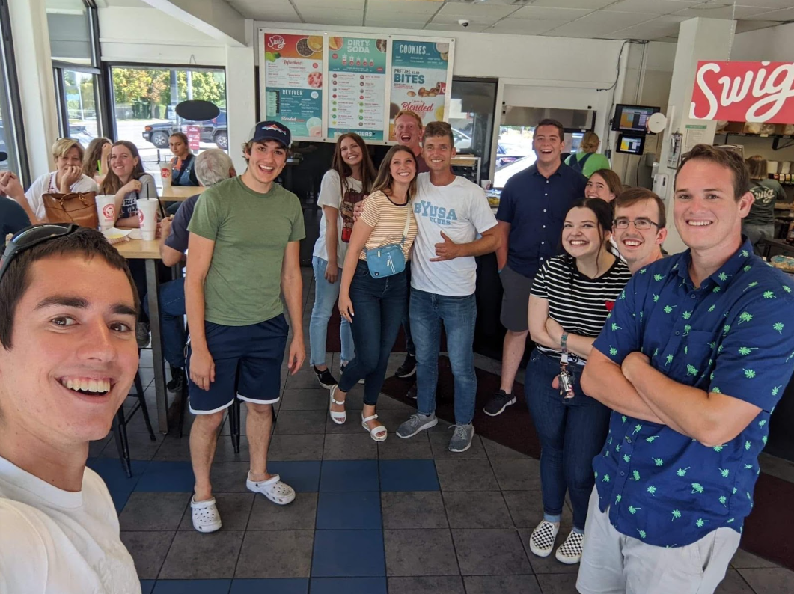
- Attendance: 18 Spencers
- Activity: Dice and Card Games
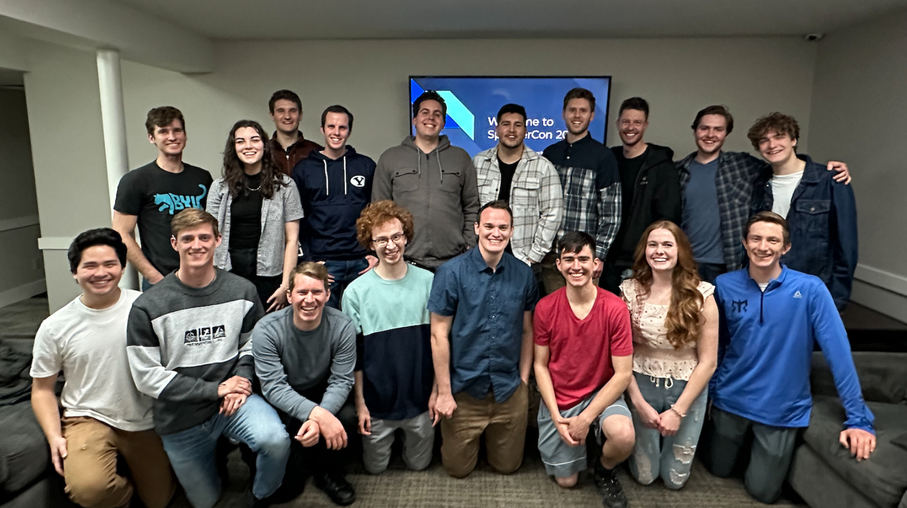
- Attendance: 12 Spencers
- Activity: Yard games (Volleyball, Spikeball, Croquet)
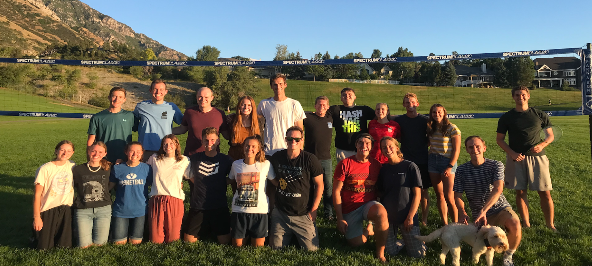
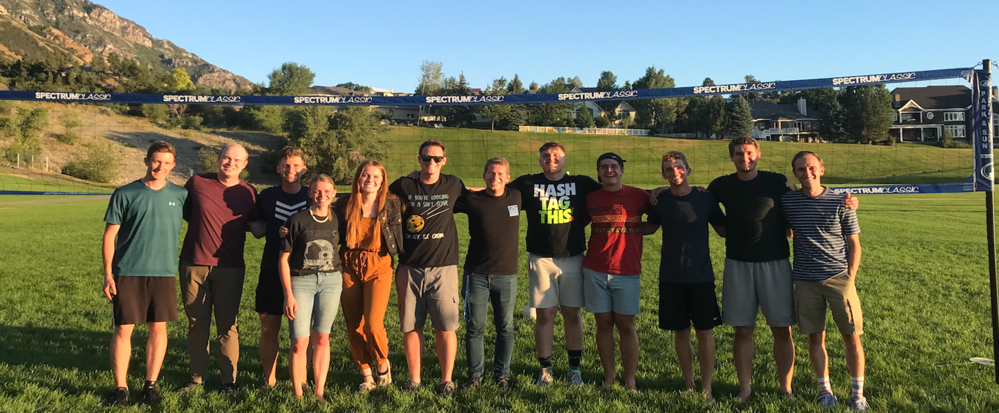
- Attendance: 12 Spencers
- Activity: Minute to Win it games with prizes
- Developed the Spencer Hand Sign (S)
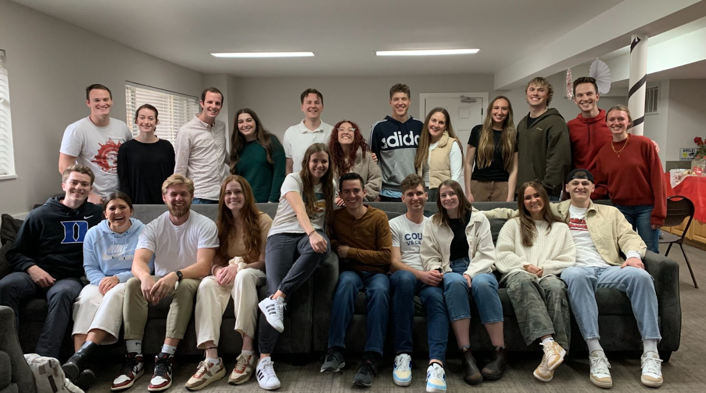
- Attendance: 3 Spencers
- Activity: Spencer Wedding
- Spencer Con Success Story - 1st Date was 4th Semi-annual Spencer Con
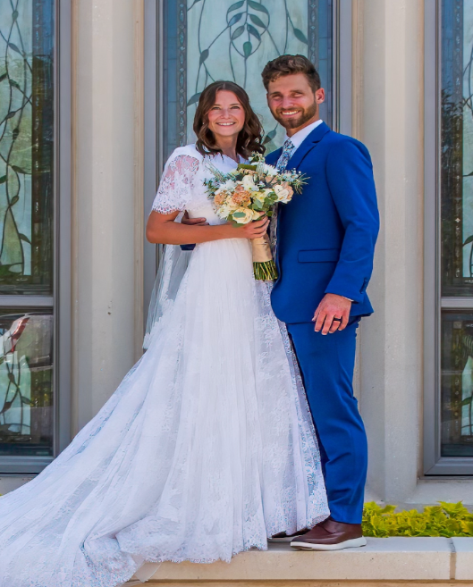
- Attendance: 19 Spencers (Current Record)
- Activity: Indoor pickleball
- 1st Spencer Con Challenge Winner: Spencer Klopfer
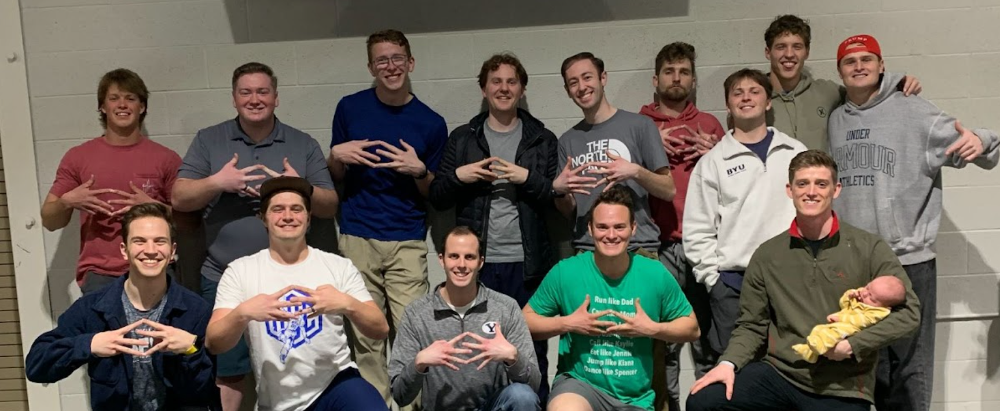
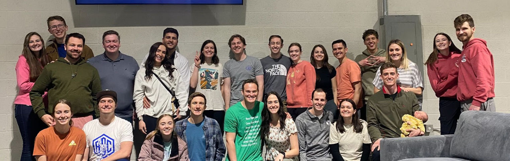
- Attendance: 2 Spencers
- Activity: Hiatus
- Atlas Spencer Kimball's birth
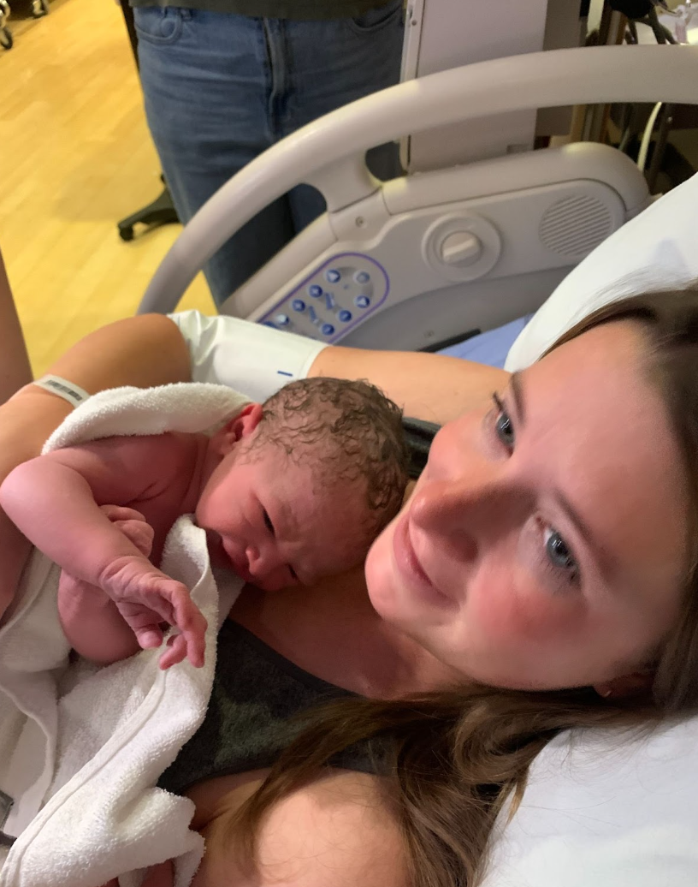
- Attendance: 12
- Activity: Picture at the Spencer Kimball tower, Spencer Burger at 7 Brothers
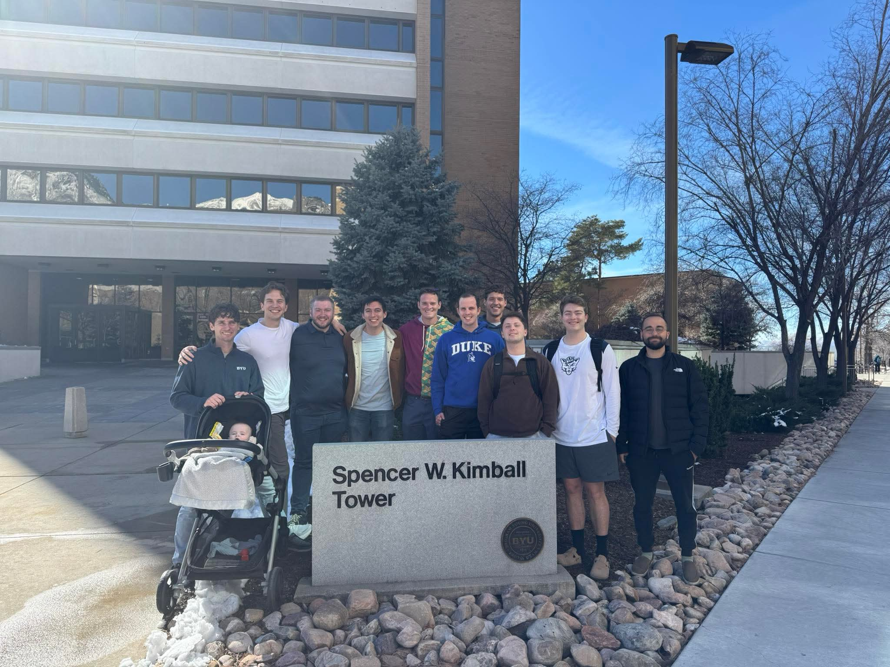
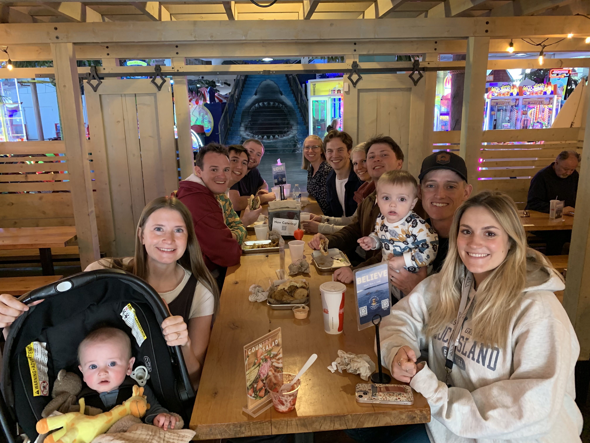
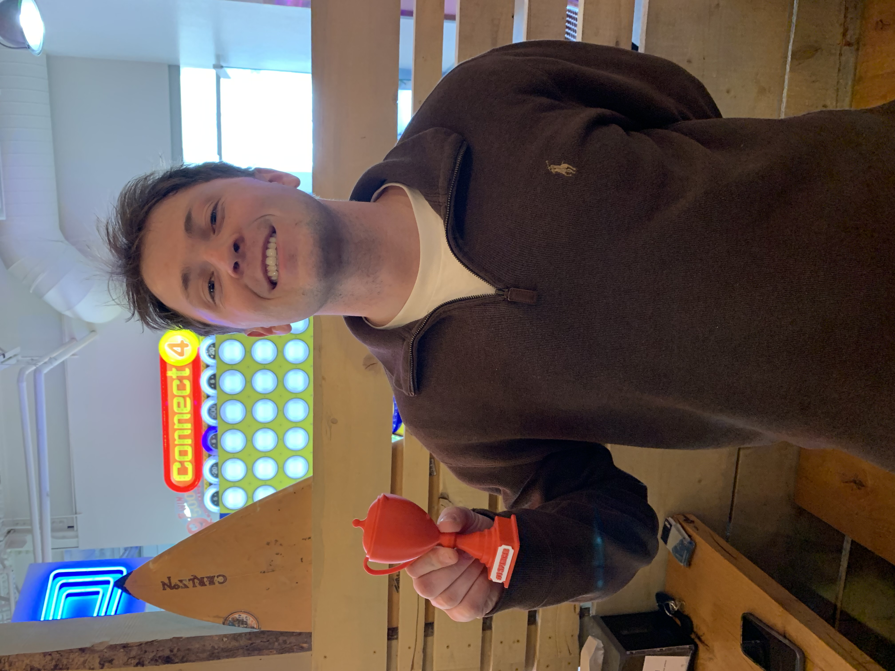